Your pets are
on the air.
Meet the WeatherPets News Team — a newsroom of animated pixel pet reporters who deliver your forecast every single day. Your pet could be next at the anchor desk.
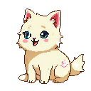
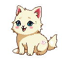
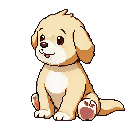
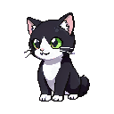
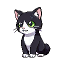
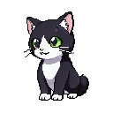
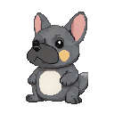
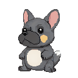
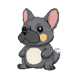
Jeter
“Sunny with a 100% chance of treats. Storm rolling in after dinner — grab the good blanket. Back to you at the desk.”
A born performer who treats every forecast like breaking news. Feisty, dramatic, and never off-script, Jeter the Shih Tzu mix has anchored more morning reports than any pet in the newsroom. When he says bring an umbrella, the whole team listens. This month he's also our most-styled anchor — see him across three different style packs below.
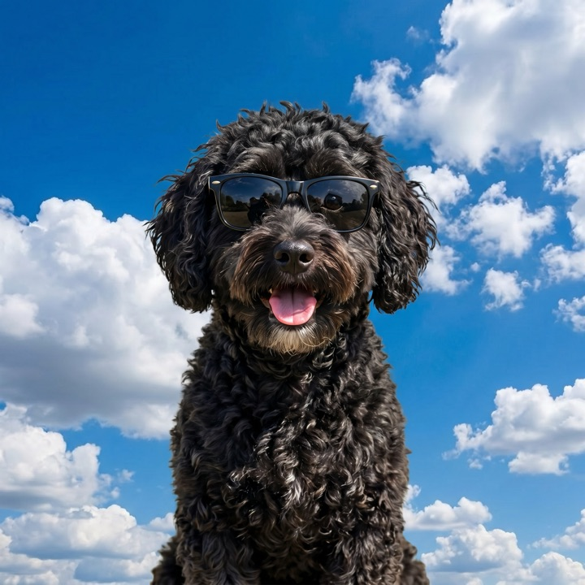
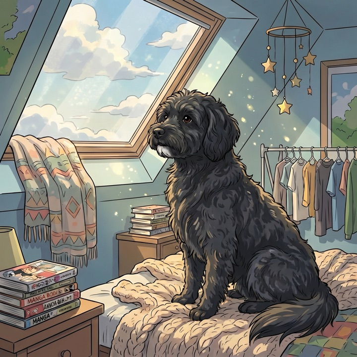
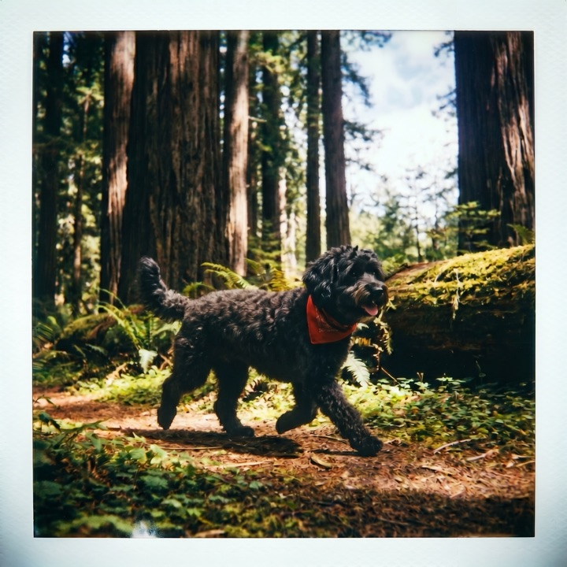
Meet the anchors
Every reporter is a real pet, sculpted into an animated pixel avatar. Here's who's on the WeatherPets desk.
Jeter
A born performer who treats every forecast like breaking news. Dramatic, never off-script.
Milo
Golden, fearless, and unflappable. Anchors the storm desk even when the radar lights up red.
Maple
The gentlest voice on the air, easing you into the day with soft, cozy sunrise reports.
Tonka
Live from the field with maximum attitude. Sassy, curious, and always first to the puddle.
Frenchy
The desk's coolest head. Crunches the pressure charts between naps and grins through the 10-day.
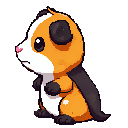
Guinness
A goofy little correspondent who pops up everywhere, wheeking out the story across every condition.
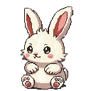
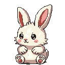
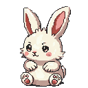
Jumper
Hops in with the garden and pollen report. Bouncy, quietly clever, and always knows when to come out.
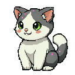
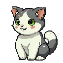
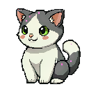
Hugh
Holds down the overnight desk solo. Aloof and unbothered, keeping a calm watch while the city sleeps.
How your pet joins the team
One photo is all it takes to put your dog, cat, or critter behind the anchor desk.
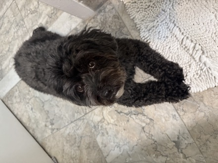
→From photo to pixel anchor
Upload a single photo and WeatherPets sculpts your pet into an animated pixel avatar — the same kind our reporters use on air, blinking and bobbing live on your screen.
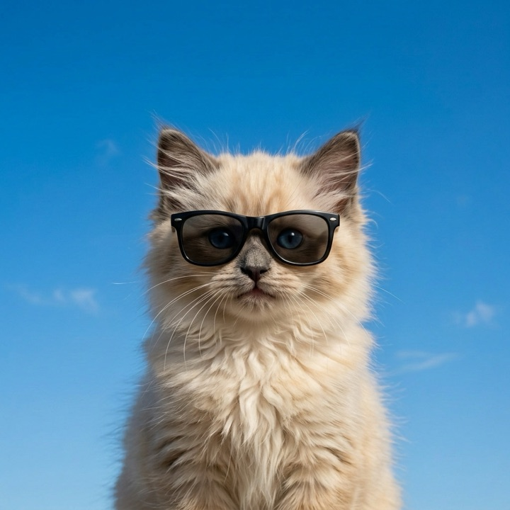
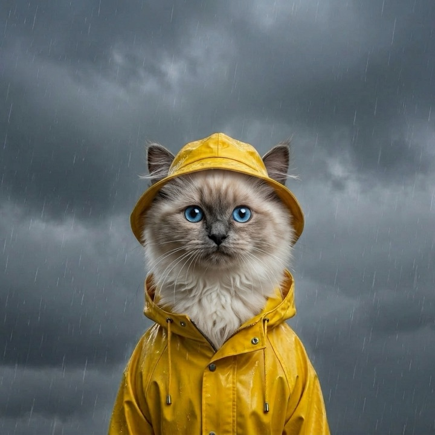
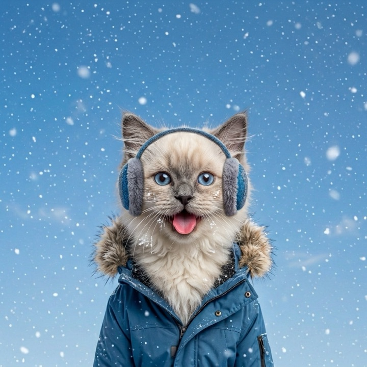
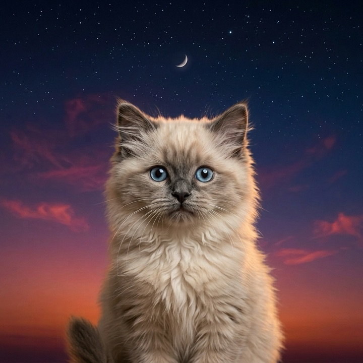
A scene for every sky
Your pet gets dressed for the weather — sunshine, rain, snow, and starry nights — with background scenes that change as the real forecast does.
Switch up the style
Swap between fun style packs — Realistic, Cinematic, Lofi Room, and Polaroid Adventure — to give your reporter a whole new look whenever the mood strikes.
Put your pet on the air.
Join Jeter, Milo, Maple and the rest of the WeatherPets News Team. Your pet's first forecast is waiting.